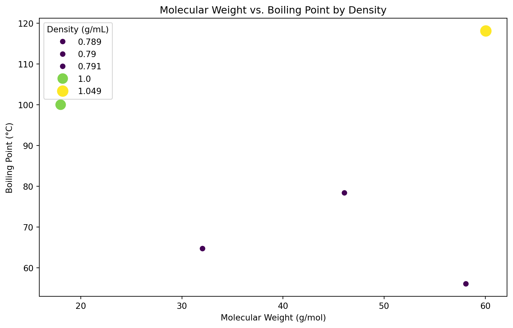

import pandas as pd
import matplotlib.pyplot as plt
import seaborn as snsSeaborn
Seaborn is a Python visualization library based on Matplotlib that offers a higher level of abstraction for creating attractive and informative statistical graphics. It’s designed to work well with Pandas DataFrames, making it an excellent tool for chemistry and other scientific data visualizations. Let’s extend our tutorial by incorporating Seaborn to make our plots more appealing with minimal effort.
Setting Up Your Environment
First, ensure you have Seaborn installed. If not, you can install it using pip:
pip install seabornImporting Libraries
After installation, import Seaborn alongside Pandas and Matplotlib:
Seaborn automatically improves the aesthetics of the plots and provides a number of high-level functions to create common types of plots.
Example Data
Let’s use the same chemistry-related DataFrame from before:
data = {
'Compound': ['Water', 'Ethanol', 'Acetic Acid', 'Acetone', 'Methanol'],
'Boiling Point (°C)': [100, 78.37, 118.1, 56.05, 64.7],
'Molecular Weight (g/mol)': [18.015, 46.07, 60.052, 58.08, 32.04],
'Density (g/mL)': [1.0, 0.789, 1.049, 0.790, 0.791] # Adding density for more examples
}
df = pd.DataFrame(data)Creating a Bar Plot with Seaborn
Seaborn’s barplot offers a quick way to create bar plots that include bootstrap confidence intervals.
plt.figure(figsize=(10, 6))
sns.barplot(x='Compound', y='Molecular Weight (g/mol)', data=df, palette='coolwarm')
plt.title('Molecular Weights of Compounds')
plt.xticks(rotation=45)/var/folders/pf/vqvpsq2s5qj_883cdbj9_vcm0000gn/T/ipykernel_70502/2403332906.py:2: FutureWarning:
Passing `palette` without assigning `hue` is deprecated and will be removed in v0.14.0. Assign the `x` variable to `hue` and set `legend=False` for the same effect.
sns.barplot(x='Compound', y='Molecular Weight (g/mol)', data=df, palette='coolwarm')([0, 1, 2, 3, 4],
[Text(0, 0, 'Water'),
Text(1, 0, 'Ethanol'),
Text(2, 0, 'Acetic Acid'),
Text(3, 0, 'Acetone'),
Text(4, 0, 'Methanol')])Creating a Scatter Plot with Seaborn
Seaborn’s scatterplot function adds more options for customization and automatically adjusts aesthetics.
plt.figure(figsize=(10, 6))
sns.scatterplot(x='Molecular Weight (g/mol)', y='Boiling Point (°C)', data=df, hue='Density (g/mL)', palette='viridis', size='Density (g/mL)', sizes=(50, 200))
plt.title('Molecular Weight vs. Boiling Point by Density')Text(0.5, 1.0, 'Molecular Weight vs. Boiling Point by Density')
Enhancing Plots with Pairplot
Seaborn’s pairplot function creates a matrix of scatter plots for quick exploration of relationships between multiple variables. This is especially useful in chemistry for identifying trends and correlations between different properties.
sns.pairplot(df, hue='Compound', palette='plasma')Advanced Customization with Seaborn
Seaborn works seamlessly with Matplotlib, meaning you can use Matplotlib’s functions for fine-tuning. However, Seaborn itself offers advanced customization options:
- Themes: Use
sns.set_theme()to set the aesthetic style of the plots. - Contexts: With
sns.set_context(), you can adjust the scale of plot elements and labels to best suit your presentation or publication needs. - Color Palettes: Seaborn has a wide range of color palettes to make your plots more attractive and informative. Use
sns.color_palette()to explore and set different palettes.
sns.set_theme(style='whitegrid')
sns.set_context('talk')
plt.figure(figsize=(10, 6))
sns.scatterplot(x='Molecular Weight (g/mol)', y='Boiling Point (°C)', data=df, hue='Compound', palette='cool', s=100, edgecolor='black')
plt.title('Molecular Weight vs. Boiling Point')Text(0.5, 1.0, 'Molecular Weight vs. Boiling Point')Seaborn significantly simplifies the process of creating beautiful and informative plots with Python. Its integration with Pandas DataFrames and the underlying power of Matplotlib make it an excellent choice for visualizing chemistry-related data. By leveraging Seaborn’s high-level plotting functions and customization options, you can quickly create plots that are both visually appealing and rich in information, suitable for analysis, presentations, and publications.
More examples can be found in the gallery: https://seaborn.pydata.org/examples/index.html.